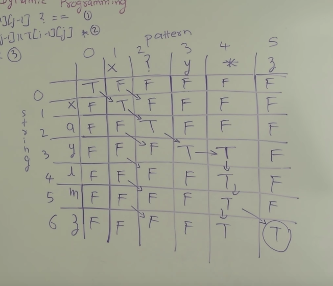

题目解析
实现通配符匹配，*可以匹配任意字符或者0个字符，？匹配一个任意字符
方法一 贪心
这道题最关键的是*，因为它的特性能够匹配任意多字符。
对于下面样例，si是s的索引，pi是p的索引
当p[pi] == '*'时，需要看*之后的字符能不能和[si~len(s))范围内的字符匹配，如果能匹配，才继续考虑pi之后的字符。记住si、pi的位置，此时相当于考虑下面的情况：
s = "bc" p = "c"，当s[si] != p[pi]时，说明*应该匹配更多的s中的字符，此时pi回退到*号之后的位置，si回退到下一个位置。s = "c" p = "c"
有一种情况是s是p的子串情况：
需要判断p结尾是不是还有没匹配的，如果剩下的模式是*那也行，如果不是，说明模式p不符合s
1
2
3
4
5
6
7
8
9
10
11
12
13
14
15
16
17
18
19
20
21
22
23
24
25
26
27
28
29
| class Solution {
public:
bool isMatch(string s, string p) {
int si = 0, pi = 0;
int startp = -1;
int sp = -1;
while (si < s.size()) {
if (s[si] == p[pi] || p[pi] == '?') {
si++; pi++;
} else if (p[pi] == '*') {
startp = pi;
sp = si;
pi++;
} else if (p[pi] != s[si]) {
if (startp != -1) {
pi = startp+1;
si = ++sp;
} else {
return false;
}
}
}
while (pi < p.size()) {
if (p[pi] != '*') return false;
pi++;
}
return true;
}
};
|
方法二 动态规划
转移方程：
1
2
3
4
5
6
| i, j分别表示s的0～i-1的子串，p的0～j-1的子串, 因为0，0表示初始条件，所以字符串的索引都往后移一位
1. dp[i][0] = false where i = 0~len(s)
2. dp[0][j] = dp[0][j-1] where p[j] = '*' else dp[0][j] = false
3. dp[i][j] = dp[i-1][j-1] where s[i] == p[j]
4. dp[i][j] = dp[i][j-1] || dp[i-1][j] where p[j-1] is '*'
|
关键是p[j-1]是*的情况，此时分两种情况：
s = "xayl", p = "x?y*", i = 4, j = 4
*不匹配任意字符，则dp[i][j]的结果等于dp[i][j-1],即s= "xayl", p="x?y"*匹配s[i],s[i]被包含进*中， 则结果dp[i][j]等于dp[i-1][j]，即s= "xay", p="x?y*"
下面是s = "xaylm3", p = "x?y*3"的例子

1
2
3
4
5
6
7
8
9
10
11
12
13
14
15
16
17
18
19
20
21
22
23
24
25
26
| class Solution {
public:
bool isMatch(string s, string p) {
vector<vector<bool> > dp(s.size()+1, vector<bool>(p.size()+1, false));
dp[0][0] = true;
for (int i = 1; i < dp[0].size(); i++) {
if (p[i-1] == '*') {
dp[0][i] = dp[0][i-1];
}
}
for (int si = 1; si < dp.size(); si++) {
for (int pi = 1; pi < dp[si].size(); pi++) {
int s_index = si-1, p_index = pi-1;
if (s[s_index] == p[p_index] || p[p_index] == '?') {
dp[si][pi] = dp[si-1][pi-1];
} else if (p[p_index] == '*') {
dp[si][pi] = dp[si][pi-1] || dp[si-1][pi];
}
}
}
return dp.back().back();
}
};
|
参考